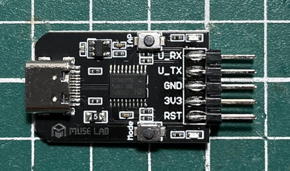

參考資訊：
https://github.com/ch32-rs/wlink
file:///home/steward/Downloads/CH32V003RM.PDF
https://github.com/AdiHamulic/CH32V003-Bare-Metal
https://github.com/ch32-rs/wlink/blob/main/docs/references.md
https://github.com/xpack-dev-tools/riscv-none-elf-gcc-xpack/releases/tag/v14.2.0-3
編譯器使用xpack-riscv-none-elf-gcc
$ wget https://github.com/xpack-dev-tools/riscv-none-elf-gcc-xpack/releases/download/v14.2.0-3/xpack-riscv-none-elf-gcc-14.2.0-3-linux-x64.tar.gz
$ tar xvf xpack-riscv-none-elf-gcc-14.2.0-3-linux-x64.tar.gz
$ sudo mv xpack-riscv-none-elf-gcc-14.2.0-3 /opt
$ export PATH=/opt/xpack-riscv-none-elf-gcc-14.2.0-3/bin/:$PATH
$ riscv-none-elf-gcc --version
riscv-none-elf-gcc (xPack GNU RISC-V Embedded GCC x86_64) 14.2.0
燒錄軟體使用wlink
$ sudo apt install libudev-dev libusb-1.0-0-dev
$ cargo install --git https://github.com/ch32-rs/wlink
$ wlink --version
wlink 0.1.1
燒錄器使用WCH-LinkE
